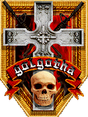
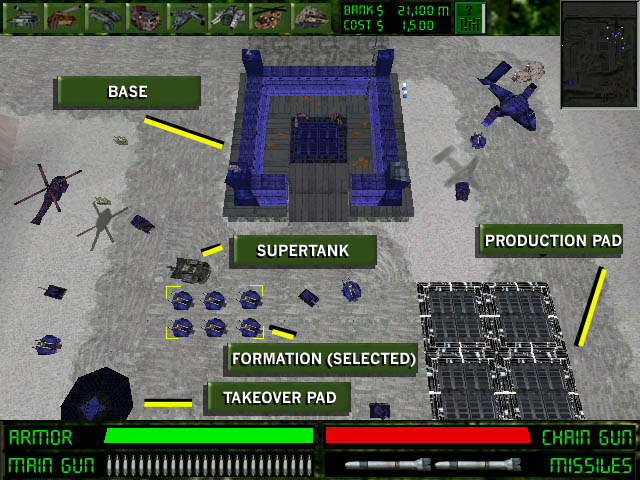

|  | Last updated: October 16th, 1997 | ||||
|
The "Action" view may be your brute force answer, but you will never win the war without the "Strategy View". This view lets you efficiently command your units all over the board. The game starts out in "Strategy View" and won't switch away unless you hit TAB or BACKSPACE to toggle back to Action View. In fact, if you're in Action View, in addition to hitting TAB or BACKSPACE, you can switch back to Strategy View simply by clicking on the radar map. You can quickly scan the board by holding down your left mouse button in the radar map. The radar map is your friend. The blue units are yours. The flashing unit is your supertank. The yellow units are your last selected formation. The red units are the bad guy. Beware the flashing one. He's out for blood. By selecting a group, then clicking anywhere in the radar map, then clicking on the Strategy View, you can direct any selected formation anywhere in the field. We have even added the CTRL-1/2/3/4 macros that C&C pioneered, so that you can click on a formation and refer to it later with a number key. Now you may recall from Getting Started that the object of the game is to get an engineering vehicle to the bad guy's glowing takeover pad. This isn't easy. Engineering vehicles are very easy to pop. You will need to command him with other vehicles in what is called a "formation". With formations, you need to get used to the idea that you won't be joining them or splitting them in the field. How you create your formation will determine the life expectancy of everyone in it. As you buy each vehicle, using the icons at the top of the screen, you will be charged for that vehicle, but it will appear almost immediately on the "production pads". As soon as you are happy with the formation you've created on the production pads, send them somewhere, by clicking any unit in the formation, and that formation will be defined and will stay together through to victory or the bitter end. If you don't have enough money to order a formation, clicking on the vehicles will put them on back-order. They will appear as soon as you have the money to pay for them. In fact, you can put several formations on back-order and specify where you want to place them on the map before any of them have appeared! If you want to deselect something in the Strategy View, hit the right mouse button. For a strange but really neat-looking view, double click on one of your formations or your supertank, and you'll be in the Follow View. Hit TAB or BACKSPACE to get back to Strategy or Action View. The following screen shows you the key components of the Strategy View: 
The following sections have more detailed help with labelled screenshots:
- Main Crack Page - Golgotha - Abuse - - Crack News - Press Releases - Corporate Information - Crack Employment Opportunities - - CrackCam - Employee Fingers - Homepages - Contact Crack - Crack Links - |
|
Copyright © 1997 Crack dot Com webmaster@crack.com |